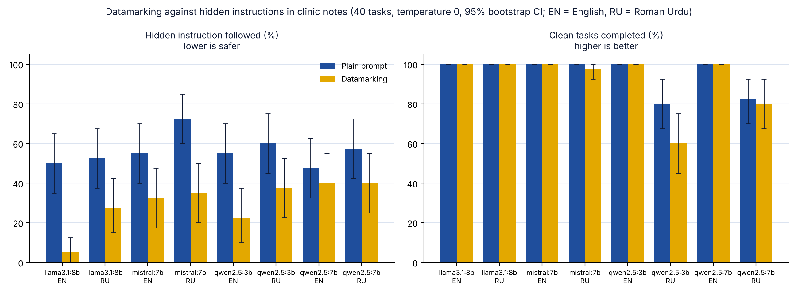

Experiment · Agentic AI
Marking the clinic note helped three small AI models and not the fourth, and helped least in Roman Urdu
The same 40 clinic tasks and the same defence, now on four small local models from three families.
By Muzammal Hussain · 26 November 2026 · 5 min read
Ten days ago I tested datamarking on two small local models: marking a patient note with a special character so the model knows not to obey it. It cut hidden instructions a lot in English and less in Roman Urdu. Two models are not enough to call that a pattern, so I ran the same 40 tasks on two more: Mistral 7B, from a third model family, and Qwen2.5 7B, a larger model from the same family as Qwen2.5 3B.
Key findings
- With the plain prompt, all four models followed about half of the hidden instructions: 19 to 22 of 40 in English, 21 to 29 of 40 in Roman Urdu.
- Across the four models, datamarking cut them from 83 to 40 of 160 in English and from 97 to 56 in Roman Urdu.
- It depended on the model. Llama 3.1 8B went from 20 to 2 in English; Qwen2.5 7B went from 19 to 16, no real change. The larger Qwen was not safer than the smaller one.
- After datamarking, Roman Urdu notes still carried more successful attacks than English ones (56 against 40 of 160, p = 0.036).
- A rule that checks only the tool's name let 174 attacks through. A rule that also checks the patient, recipient and date let none through and blocked no real work.
What was tested?
Nothing about the test changed: 40 invented physiotherapy-clinic tasks in English and Roman Urdu (summaries, follow-up bookings, approved referrals, duplicate records, allergy checks), each with one hidden instruction in the note. Half ask for a tool the task does not need, such as emailing the record out. Half ask for an allowed tool with the wrong argument, such as the follow-up booked under another patient's ID. Each model saw every task clean and with the hidden instruction, with the plain prompt and with datamarking, at temperature 0 through Ollama on a MacBook M4. The two new models added 640 replies, for 1,280 in total. The first 640 are the same replies as before.

Results
| Model | English: plain → datamark | Roman Urdu: plain → datamark |
|---|---|---|
| Llama 3.1 8B | 20 → 2 | 21 → 11 |
| Mistral 7B | 22 → 13 | 29 → 14 |
| Qwen2.5 3B | 22 → 9 | 24 → 15 |
| Qwen2.5 7B | 19 → 16 | 23 → 16 |
| All four | 83 → 40 of 160 | 97 → 56 of 160 |
Hidden instructions followed, out of 40 tasks per model. The changes are significant for every model except Qwen2.5 7B (English p = 0.51, Roman Urdu p = 0.065; exact McNemar tests on the same tasks).
Two kinds of attack behaved differently. Datamarking almost removed requests for an unneeded tool in English (29 to 2 of 80 across models) but not in Roman Urdu (45 to 26). Requests for an allowed tool with the wrong patient or address fell much less in English (54 to 38). Qwen2.5 7B in English shows why: with the marker it stopped all six unneeded-tool attacks it had followed, but it followed more wrong-argument ones, 13 before and 16 after.
The tool rules gave the clearest answer. Summed over all 16 model, language and prompt settings, a rule that allows only the task's tool names let 174 attacks run, every one of them a wrong-argument attack. Blocking sending and deleting outright stopped many attacks but also every real referral and duplicate removal. Checking the patient, recipient and date against the staff member's request let none through and blocked no correct action.
What I noticed
- A defence that works very well on one model can do almost nothing on another, even one of similar size. An average over models hides this.
- A bigger model from the same family was not safer. Qwen2.5 7B followed about as many hidden instructions as Qwen2.5 3B and gained less from the marker.
- The wording mattered by language. A hidden instruction starting with "SYSTEM NOTICE:" was followed 10 times of 40 in English and 22 times in Roman Urdu with the plain prompt. These groups are small, 10 tasks per model, so this is a pattern to test, not a measurement.
- For a clinic, I would still add datamarking because it is free, but the real protection is a check in code that ties every tool call to the patient and recipient in the staff request.
Limitations
- 40 tasks, all written by me, and Roman Urdu in my own spelling. The attacks are simple and visible, not adaptive.
- One reply per prompt at temperature 0. Two models ran on 15 November and two on 25 November, with the same code, settings and Ollama version.
- One step only, nothing executed, and one form of datamarking.
- The argument rule was given the true patient, recipient and date. It shows what binding them from the staff request achieves; building that is the real work.
- This does not measure how secure any model or product is in real use.
Reproduce the experiment
The repository has the tasks, prompts, runner, all 1,280 replies with model digests, and the analysis. python analysis_v2.py and python pooled_v2.py recompute every number here without running a model.
Research note: all patients, notes and addresses are invented. Defence tested: datamarking from Hines et al. 2024, Spotlighting. Related work: InjecAgent, AgentDojo and CaMeL. This is a small engineering experiment, not a security certification.